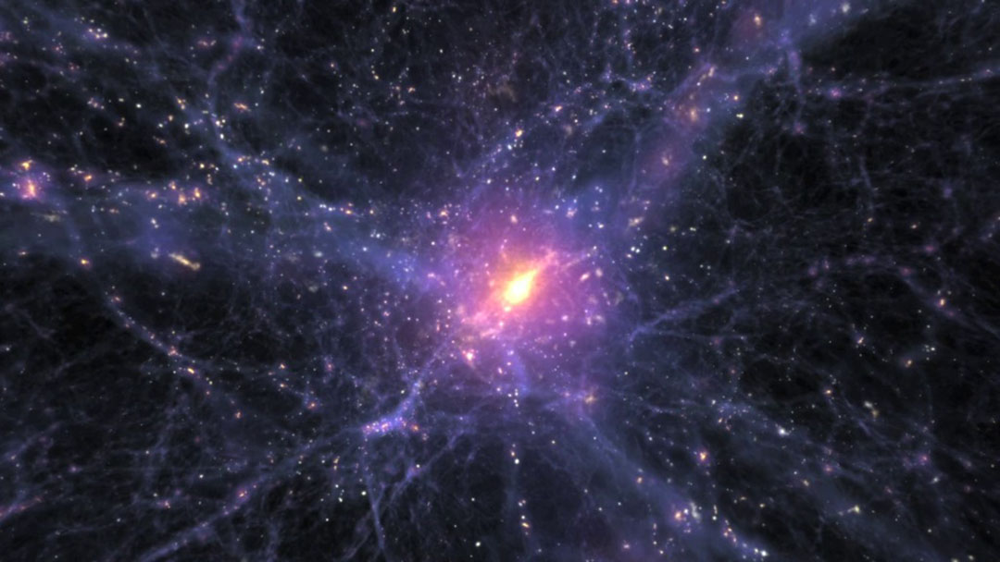

The Mysteries of Dark Matter and Dark Energy: Current Research and Future Perspectives
Dark matter and dark energy
Dark matter and dark energy are two of the most interesting and mysterious elements in the universe.
Dark matter is matter that has mass but cannot be directly observed because it does not interact with light or electromagnetic waves. Its existence was first questioned in the 1930s when Swiss astronomer Fritz Zwicki discovered that galaxy clusters had much more mass than visible matter. Modern research suggests that dark matter makes up about 85% of the total matter in the universe and plays an important role in the formation and maintenance of galaxies and galaxy clusters.
Dark energy is a newer concept, discovered in the late 1990s, and is the mysterious force responsible for the accelerated expansion of the universe. Through observations of supernovae, two teams of researchers discovered that the universe was expanding faster than expected, a discovery that earned Saul Perlmutter, Brian Schmidt, and Adam Rees the Nobel Prize in Physics in 2011. Dark energy is currently estimated to make up about 68-70% of the energy-matter composition of the universe.
Current research is making various attempts to unravel the nature of dark matter, most notably with the recent analysis of data from the LUX-ZEPLIN (LZ) dark matter detector. The Broadband Reflector Experiment for Axion Detection (BREAD) experiment is also trying a new approach to explore the possibility that dark matter is in a form called an ‘axion’.
In the study of dark energy, the latest results from the Dark Energy Spectroscopy Instrument (DESI) have made an interesting discovery: data collected by the instrument suggests that dark energy may be changing over time, reaching its peak intensity when the universe was about 70% of its current age and then weakening to about 10% today. This is an important discovery that could change existing theories about the nature of dark energy, which until now was thought to be constant.
The European Space Agency’s (ESA) Euclid mission and NASA’s Nancy Grace Roman Space Telescope, scheduled for launch in 2027, are expected to provide more accurate data on dark energy and dark matter. These missions will observe billions of galaxies and create 3D maps of the universe, allowing us to see how dark energy has separated matter.
These studies will expand our understanding of the origin, current state, and future fate of the universe.
The history and latest discoveries of dark matter
The term dark matter actually predates Fritz Zwicki. Dutch astronomer Jacobus Kapteyn first mentioned the term “dark matter” in a paper published in the Astrophysical Journal in May 1922. Subsequent work by astronomers Jan Oort and Vera Rubin supported the theory of dark matter. In particular, Vera Rubin studied the rotation curve of the Andromeda galaxy beginning in the late 1960s and found that the outer regions were spinning faster than expected, strongly suggesting the presence of dark matter.
More recent research has made the intriguing discovery that dark matter may be more than just invisible, it may be chemically active. A study published in March 2025 hypothesized that light dark matter particles self-annihilate when they encounter each other, creating electrons and positrons, and that these particles ionize the gas at the center of our galaxy, which could explain the presence of excess ionized gas at the center of our galaxy that has puzzled astronomers for decades. NASA’s COSI telescope, scheduled for launch in 2027, is expected to confirm this groundbreaking discovery.
In addition, a team of researchers from Nanyang Technological University in Singapore has developed an innovative approach to detecting dark matter using a special crystal structure. They have experimentally demonstrated that photons can behave like axions inside specially designed yttrium iron garnet crystals. This discovery opens up new possibilities for dark matter detection.
The nature of dark energy and new perspectives
There are several main theories about the nature of dark energy. The most popular is the ‘cosmological constant’ or ‘vacuum energy’ theory, which explains that the energy of space itself is responsible for the accelerated expansion of the universe. Other theories include the ‘evolving dark energy’ or ‘quintessence’ theory, which argues that dark energy may change over time. Another hypothesis suggests that there is a problem with Einstein’s theory of gravity, leading to errors in calculations, which are being misinterpreted as dark energy.
The latest findings from the Dark Energy Spectroscopy Instrument (DESI), published in March 2025, further strengthen the evidence that dark energy may change over time. The DESI team analyzed data from its first three years of observations to create the largest 3D map of the universe, covering about 15 million galaxies and quasars. When they combined this data with information from the cosmic microwave background, supernovae, and the weak gravitational lensing effect, they found signs that dark energy’s influence is weakening over time. This suggests that the expansion of the universe may eventually stop, which some scientists say opens up the possibility that the universe will eventually end in a “big crunch.”
The future of dark matter and dark energy research
There are many directions for future research. Currently, the main ones include observing bright objects (especially supernovae) to measure the history of the expansion of the universe, and studying the evolutionary patterns of the large-scale structure of the universe.
A notable future research project is ESA’s Euclid mission, launched in 2023. This mission will observe billions of galaxies to create a 3D map of the universe and investigate how matter is being pulled apart by dark energy. NASA’s Spectro-Photometer for the History of the Universe, Epoch of Reionization, and Ices Explorer (SPHEREx) mission, scheduled to launch by April 2025, is also expected to contribute to studying the origins of the universe and improving our understanding of dark energy.
The Vera C. Rubin Observatory, scheduled to be fully operational in 2025, is under construction in Chile and is supported by the National Science Foundation. This ground-based observatory, along with NASA’s Nancy Grace Roman Space Telescope and the Euclid mission, is expected to usher in a new “golden age” of cosmological research.
Unraveling the mysteries of dark energy and dark matter through these studies could ultimately change our understanding of the fate of the universe. If dark energy continues to weaken, it is possible that the expansion of the universe will eventually reverse, ending in a “big crunch.” On the other hand, if dark energy remains constant, the universe will continue to expand, eventually reaching a state of “big freeze” where everything is so far apart that not even light can bridge the gaps between galaxies.